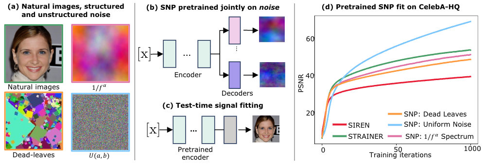
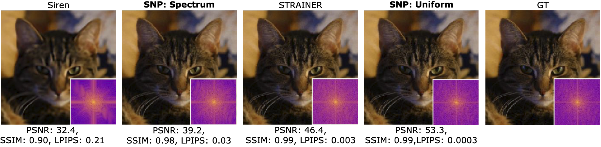
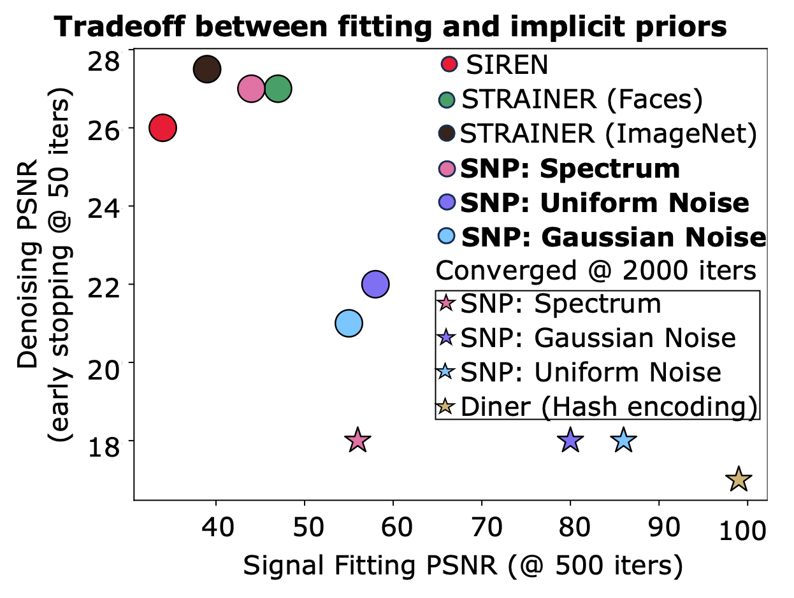
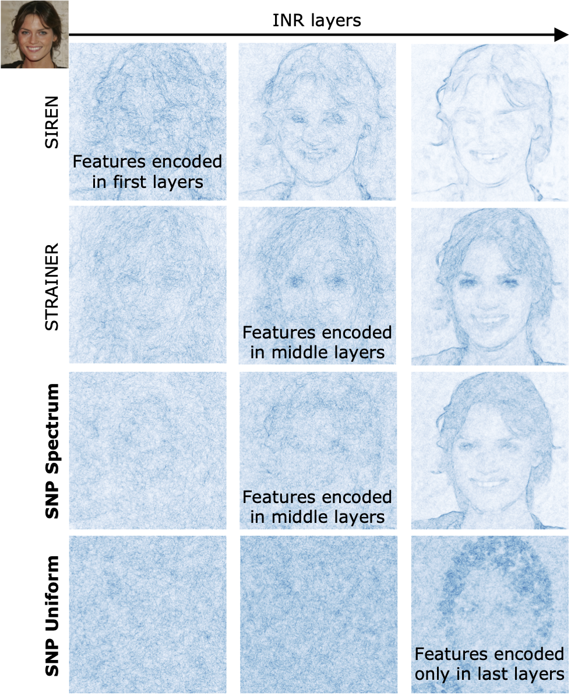
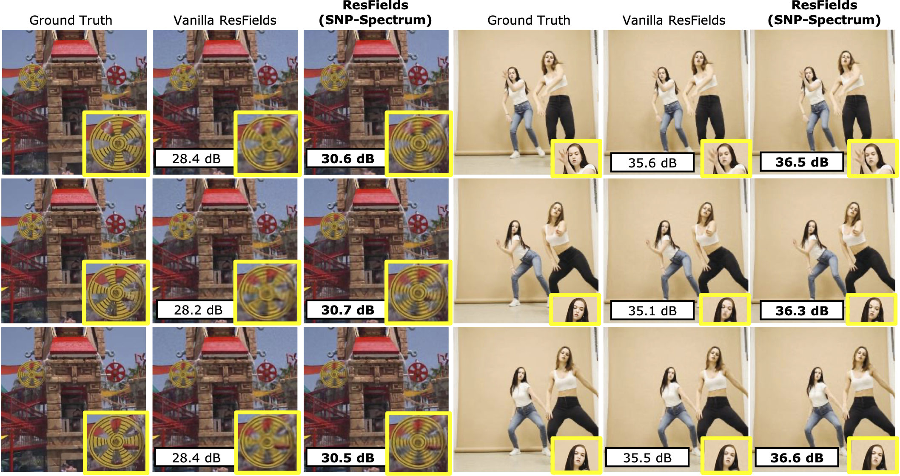

Abstract: The approximation and convergence properties of implicit neural representations (INRs) are known to be highly sensitive to parameter initialization strategies. Several data-driven INR parameter initialization methods demonstrate significant improvement over standard random sampling, but the reason for their successes – whether they encode classical statistical signal priors or something more sophisticated – is not well understood. In this study, we explore this topic with a series of experimental analyses leveraging noise pretraining. In particular, we pretrain INRs on noise signals of different classes (e.g., Gaussian, Dead Leaves, Spectral), and measure their abilities at both fitting unseen signals and encoding priors for an inverse imaging task (denoising). Our analyses on image and video data reveal the highly surprising finding that simply pretraining on unstructured noise (Uniform, Gaussian) results in a dramatic improvement in signal fitting capacity compared to all other baselines. However, unstructured noise also yields poor deep image priors for denoising. In contrast, noise with the classic 1/f spectral structure of natural images yields an excellent balance of both signal fitting and inverse imaging capabilities on par with the best data-driven initialization methods. This finding can enable more efficient training of INRs in applications without sufficient prior domain-specific data.

In this study, we explore the effectiveness of initializing INR parameters with signals from noise classes with different properties.: (a) Samples of a few of the signal types we consider in this study: natural images, noise with the classic ``\(1/|f^\alpha|\)’’ spectral signature of natural images, Dead Leaves noise, and Uniform noise. (b) We propose SNP, a simple but powerful data-driven INR parameter initialization method using noise samples leveraging the STRAINER initialization framework. We pretrain an INR encoder with signal-specific decoder heads on noise samples from one class. (c) At test time, the pretrained encoder may be fine-tuned with a randomized decoder on a new (real) signal. (d) Surprising test-time signal fitting results on Celeb-A-HQ: SNP initialization using Uniform noise performs dramatically better on signal fitting compared to all other methods.

We find that pretraining INRs on uniform noise yields to quickest convergence. Power spectrum insets show reconstructed images have near perfect frequency spectrum. INRs pretraied on Spectrum noise also depict similar results. Siren , on the other hand, suffers from spectral bias and converges to lower frequencies while taking longer to fit to higher frequencies.

Tradeoff in signal representation and denoising ability of SNP INRs on Celeb-A-HQ images. At early stages of signal fitting (\(T=500\)) and denoising (\(T=50\)), SNP (Spectrum) and STRAINER perform well. In contrast, we find that SNP (Uniform,Gaussian) excel at signal fitting, but are poor denoisers. SIREN is a good denoiser but a poor signal fitter. Hence, there is a tradeoff to consider when choosing an appropriate initialization method for a task.

In our study, we show that INRs pretrained on unstructured noise such as Uniform and Gaussian noise causes initial layers of the INR to behave as complex random encoding functions. We observe similar parallels in Instant-NGP or hash-encoding based models - both, demonstrate significantly increased fitting performance. We also show that by pretraining on structured spectrum noise / in-domain face images/ ImageNet natural images, the INRs exhibit strong spatial and frequency guided internal geometry useful for inverse problems.

We also demonstrate that noise pretraining is effective for video INRs. We use ResFields[29], a popular video INR method. We show frames from representation of two example videos with randomly initialized (vanilla) ResFields~\cite{resfield}, and SNP-Spectrum-initialized Resfields. In both examples, SNP-initialization results in a higher accuracy with clearer visible details.
For more details, please refer full paper!
@inproceedings{vyas2026cvpr_snp,
author={Vyas, Kushal
and Kayabasi, Alper
and Kim, Daniel
and Saragadam, Vishwanath,
and Veeraraghavan, Ashok
and Balakrishnan, Guha},
title={The Surprising Effectiveness of Noise Pretraining for Implicit Neural Representations},
booktitle={Computer Vision and Pattern Recognition (CVPR)},
year={2026},
}